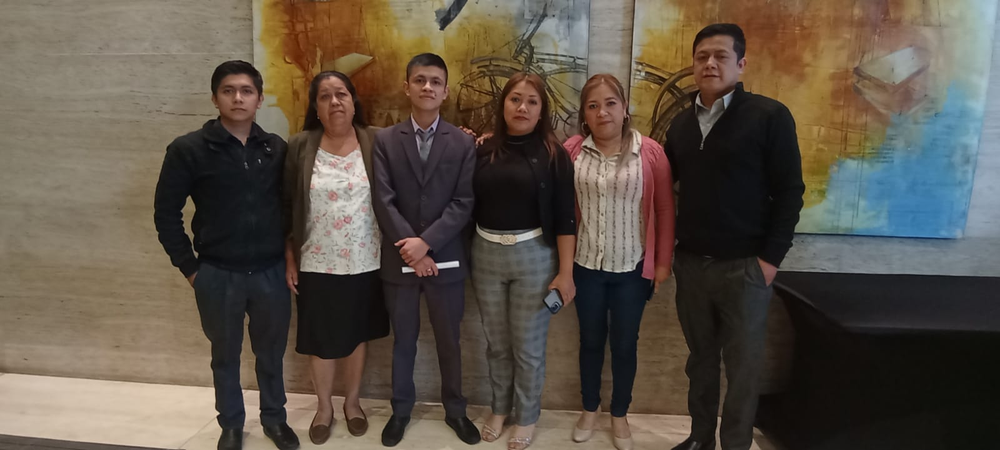
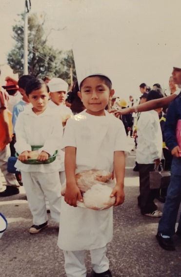
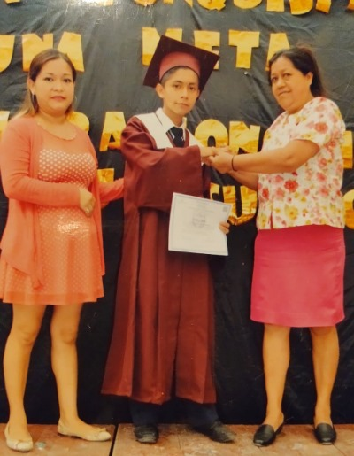
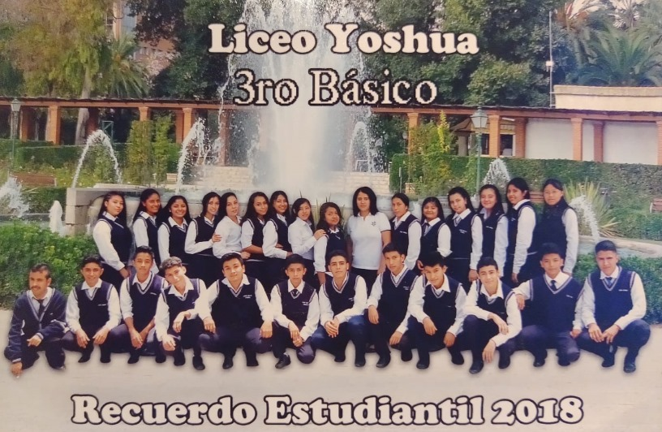
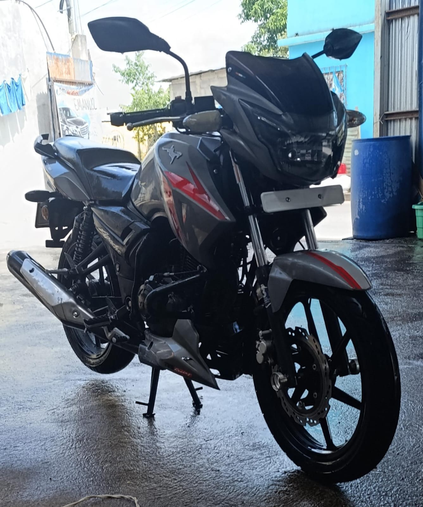

Proyecto del curso
A continuacion les presento mi autobiografia
Soy una persona con el deseo de superarse y terminar sus estudios y crecer de manera personal, motivado por el amor de mi familia y de tener un futuro de exito para mi y las personas que me rodean.
Mi padre Tomás Pop+ originario de Santa Barbara, Suchitepéquez. Era mecánico, era una persona muy servicial y atenta, además de ser responsable. A pesar de no haber pasado mucho tiempo con el tengo muy buenos recuerdos, además de haber aprendido de él, el respeto y el esfuerzo.
Mi madre María Boror, originaria de San Martin Jilotepeque, Chimaltenango. Ama de casa y comerciante, es una persona sumamente responsable y amigable, atenta y educada. Ha sido uno de mis mayores apoyos cuando lo necesito, a sido participe en mis éxitos y metas logradas. Me ha enseñado a ser respetuoso y trabajador, le agradezco cada una de las cosas que me ha inculcado desde niño.
Tengo 5 hermanos, 3 mujeres y 2 hombres, Marta es la mayor, sigue Glendy y luego Ana, las 3 han sido personas importantes y especiales para mi vida, además que me han ayudado cuando lo necesito. Mi hermano mayor, Roberto, quien ha sido como un padre para mi ya que es quien me ha apoyado, ha estado cuando lo necesito y he aprendido muchas cosas de él, ha aportado en gran parte a mi formación como persona enseñándome a trabajar y ser honesto. Mi hermano menor,Christopher con el que no llevamos un par de años ha sido una persona importante ya que también he aprendido cosas de él y ha estado apoyándome en todo momento.

Nací en Mixco, Guatsemala, el 27 de abril del 2003. Mi infancia fue muy alegre y siempre estuve rodeado de mi madre y hermanos, con el que mas conviví en mi niñez fue con mi hermano menor, recuerdo que nos gustaba jugar, salíamos a jugar pelota, aunque a veces nos peleábamos, pero luego estábamos jugando otra vez.

Respecto a mi adolescencia; fue una etapa muy distinta a la niñez, ya cambiaba mi manera de pensar y me preocupaba por problemas más complejos, trataba la manera de ayudar en la casa, aunque fue una etapa muy interesante ya que disfrute junto a amistades del lugar donde estudiaba, aprendí a apreciar aun mas a mi familia y saber que es importante estar unidos como familia.

Me considero alguien tranquilo, alegre cuando entro en confianza, respetuoso, humilde y honesto, considero que trato bien a los demás ya que es algo que me enseñaron desde niño, a ser colaborativo con los demás ya que es importante para la propia vida, me gusta pensar sobre las cosas antes de tomar alguna decisión y aprender de mis errores.
Gracias a DIOS, a mi madre y hermano mayor, fui capaz de terminar mis estudios a nivel medio, fueron los encargados de alentarme y aunque tuve momentos dificiles ellos estuvieron aconsejandome y llamandome la atención cuando fue necesario.
| Año | Grado academico |
|---|---|
| 2008-2009 | Pre-primaria |
| 2010-2015 | Primaria |
| 2016-2018 | Basicos |
| 2019-2021 | Diversificado |
Mi primer trabajo fue en call center como servicio al cliente, empece a trabajar con aproximadamente 16 años, y fue debido a que sentia la necesidad de hacerlo, queria aportar y gracias a DIOS la empresa me dio la oportunidad, oportunidad que fue clave ya que de ahi considero que aprendi muchas cosas necesarias para mi vida
| Año | Empresa |
|---|---|
| 2019-2021 | Algran S.A. |
| 2022-2025 | Banco Promerica |
Me gusta disfrutar del tiempo con mo familia, convivir con amigos. Estar en un ambiente de tranquilidad y disfrutar del tiempo.
Tener discuciones sin sentido o con personas que no se permiten escuchar.
Admiro a mi madre ya que es una mujer capaz de lograr lo que se propone y ha sido capaz de lograr sus metas.
A mi hermano mayor por su temperamento y capacidad para controlar los momentos dificiles ademas de ser una persona que a pesar de las dificultades sigue adelante.
Ahora me veo como alguien que quiere terminar su carrera y esta enfocado en su trabajo, alguien que quiere llegar a su meta pero sabe que aun le falta camino por recorrer.
En 5 años me veo ya cumpliendo una de mis metas que es graduarme, con un mejor empleo y mejores habilidades ademas de ya haber empezado con algun negocio propio, haber aprendido algun otro idioma y disfrutando con mi familia
En 10 años me veo liderando en alguna compañia con un puesto relacionado a mi carrera, tener mi familia propia y disfrutar con toda mi familia, tener mucha mas experiencia y sabiduria.


Este es un pequeño video que a sido de utilidad para recordar que aveces uno puede estar mal pero sigue teniendo el mimo valor y cumplir con una meta.
Es una cancion que habla sobre sueños y que se pueden lograr, ademas que genera motivacion al querer saber el futuro.
Elon Musk es un ejemplo del constante esfuerzo ya que fue rechazado en varias ocaciones y estuvo al borde de la banca rota, enseña que los errores son parte del camino hacia el exito y que son necesarios. A continuacion dejo la biografia de Elon Musk:
Elon MuskAgradezco principalmente a DIOS ya que es el principal y quien ha permitido y me ha bendecido en tener éxito, a mi madre y hermano mayor por el esfuerzo y apoyo que me han brindado, por sus palabras de aliento, sus consejos y por siempre estar conmigo, a mis otros hermanos que han sido participes de mi vida y me han motivado a seguir adelante, a los docentes que han aportado y compartido su conocimiento conmigo.